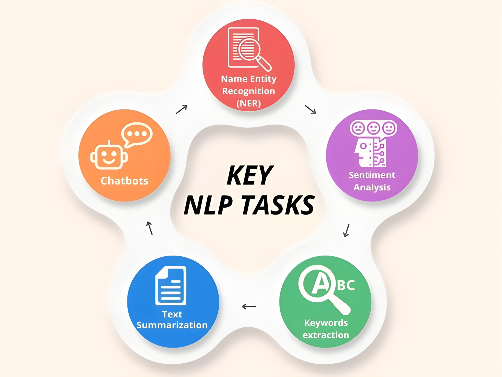

Data Science
It is built with a focus on precision and user-friendliness. Our tool is engineered to handle diverse text processing needs, from extracting individual characters to categorizing complex tokens. With its sleek interface and powerful backend, TokenMate ensures that users can easily interact with text data and gain valuable insights.
TokenMate features a clean, intuitive interface that makes tokenization straightforward for all users. Its simple layout ensures that functions are easily accessible, allowing you to focus on your work, not the tool.
The core tokenization algorithm is built using JavaScript programming language, enabling seemless user interface and precise processing of large text volumes. The powerful engine ensures consistent performance, even with complex data.
TokenMate works seamlessly across all devices and browsers, with no installation required. Its responsive design ensures smooth operation on desktops, tablets, and mobile phones, making text tokenization accessible anytime.
The current version of TokenMate is designed to tokenize text using only the semicolon (;) as the delimiter, providing consistency in tokenization while also categorizing tokens as words, numbers, punctuation, and more.
By transforming complex text into manageable tokens, TokenMate simplifies workflows and provides valuable insights, making it an indispensable asset in various professional fields.

TokenMate powers efficient text analysis and NLP tasks by breaking down text into structured tokens. It aids in sentiment analysis, entity recognition, and machine translation by extracting words, punctuation, and alphanumeric characters with precision. Be it developing language models or parsing sentences, TokenMate simplifies the tokenization process for linguists and data scientists.
In data science and machine learning, preparing clean datasets is crucial. TokenMate helps streamline data cleaning by identifying and categorizing unwanted characters, digits, or special symbols from large text files. Its tokenization techniques prepare your data for accurate analysis, ensuring it’s ready for training models or performing statistical tasks.
TokenMate assists in real-time input validation by parsing text into tokens as users input data. Whether checking for correct formatting, removing unwanted characters, or validating alphanumeric codes, TokenMate enhances the reliability of user-generated data. This makes it ideal for form validation, user registration systems, and error detection.
For platforms that rely on user-generated content, TokenMate helps automate moderation by tokenizing and analyzing text for inappropriate language, spam, or unwanted content. By categorizing text into tokens and analyzing patterns, it allows content filtering systems to work more efficiently, ensuring clean and safe environments for online communities.
TokenMate is an invaluable tool in educational settings, particularly for language learning and grammar studies. By breaking down texts into tokens like words, punctuation, and parts of speech, TokenMate helps students and educators better understand sentence structure and language patterns. It can also be used to generate vocabulary exercises and language comprehension tasks.
In industries dealing with large-scale text data, TokenMate simplifies text mining by efficiently tokenizing vast amounts of unstructured text. It enables analysts to break down documents, emails, and other text sources into structured tokens, making it easier to derive insights, discover patterns, and automate data analysis.